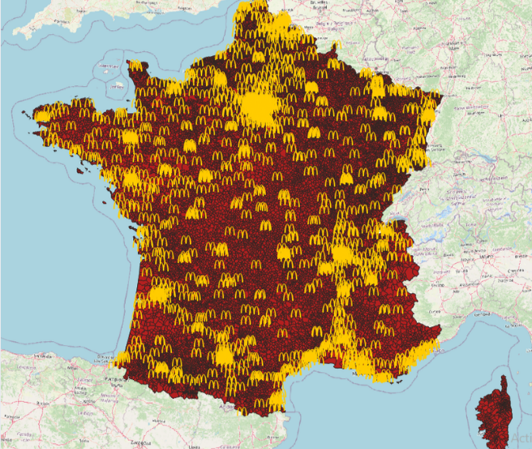

Mes Projets

Site Web Portfolio
Portfolio HTML/CSS/JS.

Indicateurs de performance
Tableau de bord Excel.

Power BI
Reporting décisionnel.

Analyse multivariée
ACP et clustering.

Projet 5
À compléter.

Analyse géographique des McDonald’s en France
Étude de l’implantation des McDonald’s afin d’analyser leur stratégie territoriale (accessibilité, gares, TGV, population).